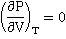
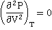

Black smoker chimney showing the exit of
supercritical water, from NOAA
Water is a single supercritical phase above its critical point (>647.096 K, >22.064 MPa), where liquid and gas phases cannot be distinguished.
' High temperature aqueous physical chemistry is fertile ground for
scientific and engineering advances '
Ernst Ulrich Franck, 2004
As the temperature (and pressure) of liquid water is raised, the hydrogen bonds break and it becomes increasingly reactive and, above 374 °C, becones a single phase with water vapor (supercritical). Supercritical water was discovered in 1822.b Much of the water on Earth is supercritical within the crust and mantle. Beyond the critical point (>647.096 K and >22.064 MPa)a in the liquid-vapor space (towards the top right of the water phase diagram below), water is a single supercritical phase existing as small but liquid-like hydrogen-bonded clusters dispersed within a gas-like environment [456, 894, 1962], where physical properties, such as gas-like (GL) or liquid-like (LL) behavior, vary in response to changing temperature, pressure and density and the typical distinction between gas and liquid has disappeared [1766]. d At temperatures above the critical temperature of 647.096 K, it is possible to go from vapor-like densities to liquid-like densities without going through a phase transition; i.e., above 647.096 K, water vapor cannot be liquefied by increasing pressure. At the critical point, there is about 30% free monomeric H2O molecules and only about 17% hydrogen-bonding, but this is far greater than in the normal gas phase. It is heterogeneous, and instantaneous properties vary over a wide range between the different structural forms, giving 'average' properties that are, perhaps, not representative. As with other supercritical fluids. Supercritical water has no surface tension with its gas or liquid phase or any other supercritical phase as no such interfaces exist.
As the critical point is reached, along the pressure-defined boiling point (the saturation line), the density of the liquid diminishes, and the density of the vapor increases until they are equal at the critical point. Just below this point, extreme density fluctuations due to minute droplets of liquid in vapor of almost identical density cause opalescent turbidity, as light is scattered when the size of the fluctuations becomes comparable to the wavelength of light. At higher temperatures and pressures, water consists of a single clear phase. At this critical point, the specific heat tends to infinity, and the heat of vaporization reduces to zero [1458],
 and 
Water phase diagram showing the supercritical state
The properties of supercritical water are very different from ambient liquid water [3809], although having similarities to confined water [3372]. For example, supercritical water is a poor solvent for electrolytes, which tend to form ion pairs. However, it is such an excellent solvent for nonpolar molecules due to its low relative permittivity (dielectric constant) and poor hydrogen-bonding, that many are entirely miscible [3765]. In contrast to ambient liquid water, hydrogen bonds in supercritical water have broad weak interactions and are not as dynamically rigid and structurally stabilizing even at typical liquid-like densities of about 1000 kg ˣ m−3 [3809]. Viscosity and dielectric both decrease substantially, whereas auto-dissociation increases substantially. The physical properties of water close to the critical point (near- critical) are particularly strongly affected [677] by density. Neutron diffraction has shown that tetrahedral liquid-like states are seen within the supercritical water at above a threshold density, while below this threshold density, gas-like water forms small, trigonal, sheet-like configurations [1508].
From the dependence of the frequency maximum of the Raman O-H stretching bands, at about 3500 cm−1, with increasing temperature and pressure, the structure of supercritical water can be divided between three-dimensional and two-dimensional clustering corresponding to liquid- and gas-like states [2896]. No fully-tetrahedral states were found in supercritical water.
Supercritical water has total miscibility with organic fluids and oxygen in supercritical equilibria and presents a reactive environment [1507] capable of oxidizing toxic waste. Under extreme conditions (e.g., 2.38 g cm−3, 3000 K), it may be extremely reactive [1564], causing explosive reactions. The wide range of inorganic material solubility under varying temperatures and pressures gives rise to many synthetic processes. As with other supercritical fluids, supercritical water has high compressibility and low viscosity.
Theoretical IR spectra across the Widom line, from [3265]
The critical isochor (density 322 kg ˣ m−3; shown as the thin dotted line extension in the phase diagram above) may be thought of as dividing more-liquid-like and more-gas-like properties [540]. This isochor is outwardly similar to the loci of the CP maximum and the thermal expansion and compressibility maxima (the 'Widom' line [1715]). c Above the line is a more 'liquid-like' material and below the line is a more 'gas-like' environment. The shape of the O-H stretch infrared spectral peak changes from Lorentzian to Gaussian and back to Lorentzian across the Widom line [3265] (670 K, see right), with the width of the line shape displaying a pronounced maximum. This was thought due to an increase in the frequency fluctuations on approaching the Widom line. A further description of the mid-IR spectroscopy of supercritical water is given at [3527].
The Widom lines for isobaric heat capacity, isochoric heat capacity, isothermal compressibility, isobaric thermal expansion, mass density, and the molar internal energy all differ, particularly above 800 K, 100 MPa [1923]. A case has been put proposing a different line (the `Frenkel line') that separates liquid-like and gas-like fluids on their dynamic properties above the critical point [1961]; for example, viscosity, the speed of sound, and thermal conductivity all decrease with increasing temperature above the Frenkel line, as in liquids, but increase with temperature when sufficiently below the line, as in gases [1961]. The experimental evidence of Frenkel transitions in supercritical water have been compared with supercritical Ne, N2, CH4, C2H6 and CO2 using techniques including X-ray, neutron and Raman scattering [4383]. The use of a multi-parameter electronically coarse-grained model for water has shown the presence of both gas-like (dissociated) and liquid-like (associated) water molecules with the density dependence of the molecular dipole moment distinguishing the hydrogen-bond connectivity [2398 ]. It has been concluded on thermodynamic grounds that the supercritical state is a homogeneous fluid phase where properties change continuously and where the Widom lines are not useful in showing separation between the gas-like and liquid-like water molecules above and below the lines [3416]. In contrast, it has been found that there exists a phenomenon known as pseudo-boiling that occurs when fluid changes its structure from liquid-like (LL) to gas-like (GL) states across the Widom line. A quantitative analysis of the thermodynamics and the dynamics of water’s pseudo-boiling has been made [4284]. Molecular dynamics simulations showed that the structure of LL water above the pseudo-boiling–Widom line consists mainly of trimer and tetramer clusters, while below that line, the water in GL state is mostly formed by dimers and monomers.
At about 200 MPa, there is an increase in the interpenetration of hydrogen-bonded networks similar to that occurring at lower sub-critical temperatures [3600]. The phase diagram of water at high pressures and temperatures shows a significant difference between research teams [3335]. Under the extreme conditions of 1000 K and 11 - 20 GPa, supercritical water has a conductivity that is six and seven orders of magnitude larger than at ambient conditions. This has been shown due to rapid molecular dissociation forming short-lived hydroxide, hydroxonium, Zundel-like H5O2+ and more complex ions with free protons being transient species with lifetimes below 0.3 fs [3335].
[Back to Top  ]
]
a There is some inconsistency in the meaning of 'supercritical', with some referring to conditions above the critical temperature at all pressures, whereas others refer to the conditions when both temperature and pressure are above their critical values. [Back]
b C. Cagniard de La Tour, Exposé de quelques résultats obtenu par l’action combinée de la chaleur et de la compression sur certains liquides, tels que léau, l’alcool, l’ether sulfurique et l’essence de pétrole rectifiée. Annales de chimie et de physique , 21 (1822) 127-178. [Back]
c The Widom line. "The expression “Widom line” was first used by Stanley and coworkers in 2005 as the locus where the lines of the maxima for different response functions (e.g., more liquid-like (LL) and more gas-like (GL); specific heat, speed of sound) asymptotically converge approaching the critical point from the supercritical region" [677, 3979, 4143]. It is now applied to other critical points, such as water's second critical point, where the critical point causes large fluctuations in physical parameters that extend deeply into the phase diagram. It is named after Benjamin Widom (B. Widom, Surface tension and molecular correlations near the critical point, Journal of Chemical Physics, 43 (1965) 3892-3897) but first described in 1958 (J. M. H. Levelt, Measurements of the Compressibility of Argon in the Gaseous and Liquid Phase, Comparison of the Results with Existing Theories, PhD thesis; Universiteit van Amsterdam, 1958). [Back]
d A 2020 molecular dynamics computational study has concluded that supercritical water is not a hydrogen-bonded fluid, on the basis that the very weak interactions last less than the time for a single oxygen-oxygen vibration [4028]. [Back]
Home | Site Index | Water phase diagram | Ices, introduction | Ice-Ih | Ice-Ic | Ice-Isd | II | III | IV | V | VI | VII | VIII | IX | X | XI | XII | XIII | XIV | XV | XVI| XVII | XVIII | Amorphous ice | LSBU | Top
This page was established in 2015 and last updated by Martin Chaplin on 17 February, 2022